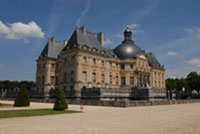

In diesem Jahr nahmen mit einer Anzahl von 23 besonders viele Schüler und Schülerinnen des Leibniz-Gymnasiums an dem diesjährigen Austauschprogramm mit unserer Partnerschule, dem Collège Blaise Pascal in Villemoisson-sur-Orge teil. In der Woche vom 16. bis zum 22. Mai 2017 empfing das Leibniz-Gymnasium zunächst die französische Schülergruppe, die von der Französischlehrerin Mme Biondi und der Kunstlehrerin Mme Grangé begleitet wurde.
Bei einem gemeinsamen Minigolfspiel im Bad Schwartauer Kurpark am Tag nach der Ankunft konnten schnell über kulturelle und sprachliche Grenzen hinweg Kontakte geknüpft werden. Auch Lübeck und Travemünde lockten mit viel Sonne und schönen Erlebnissen, die uns als Lehrkräften wieder einmal bewiesen, wie schnell Barrieren und Unsicherheiten überwunden werden und echte Freundschaften entstehen können. Bereits nach einer Woche in den Familien, fiel nicht nur vielen Kindern sondern auch ihren Eltern der Abschied schwer.
Zumindest für die Kinder hatte das Warten bis zum Wiedersehen schon am 13. Juni ein Ende, als wir mit dem Zug zu unserem Gegenbesuch nach Villemoisson-sur-Orge aufbrachen.
In Frankreich erwarteten uns unsere Austauschpartner mit viel Herzlichkeit und sonnigen Temperaturen, die bis zu unserem Abreisetag auf 35° C anstiegen. In den kommenden Tagen konnten wir den französischen Schulalltag kennen lernen – besonders der Club Ados erfreute sich bei vielen Schülern großer Beliebtheit – und wurden von Villemoissons Bürgermeister in das französische Wahlsystem eingeführt. Am Donnerstag besichtigten wir gemeinsam das Schloss von Vaux-le-Vicomte (s. Foto).
Der Abschied von unseren Gastfamilien fiel uns schwer, aber auch in diesem Jahr haben einige Familien schon gemeinsame Aktivitäten für die Sommerferien geplant.
N. Butenhoff
Projektleitertreffen 2017
Erstellt am .
Am Montag, dem 10.07, wird es in der ersten großen Pause ein Treffen innerhalb eures Projektes zur Vorbesprechung geben. Wo sich euer Projekt treffen wird, findet ihr auf dem Raumplan, der an der Stellwand von den Projekten aushängen wird. Davon abweichend findet das Projekttreffen von Herrn Dunker und Bienengräber in der zweiten großen Pausen im Physikraum 60 statt.
Eure SV
SV-Volleyball-Turnier 2017
Erstellt am .
Liebe Schülerinnen, liebe Schüler,
am 14. Juli findet unser alljährliches Volleyball-Turnier statt. In der ersten Stunde wird der normale Unterricht stattfinden, bzw. wird es Zeit geben, sich umzuziehen und sich noch einmal mit seinem Team zu besprechen. Wir bitten darum, dass ihr euch bis 8:35 Uhr am Info-Stand meldet, damit wir pünktlich anfangen können.
Euer Team benötigt mindestens 6 Spieler, aber wir raten euch, noch eine beliebige an Auswechsel- bzw. Ersatzspielern zu stellen. In jedem Team muss es mindestens ein Mädchen bzw. einen Jungen geben. Die Dauer eines Spiels beträgt zweimal fünf Minuten. Zusätzlich gibt es eine einminütige Pause zwischen den beiden Halbzeiten, um kurz zu verschnaufen und um die Seiten zu wechseln. Das Team mit den meisten Punkten gewinnt. Es ist vorgesehen, dass die 5. und 6. Klassen gegeneinander „Ball über die Schnur“ spielen.
Der Q1-Jahrgang wird uns an diesem Tag mit Snacks versorgen. Das eingenommene Geld geht dann in die Abikasse.
Falls ihr noch Fragen habt, dann könnt ihr euch an die Schülersprecherinnen oder an Yasmin (Ea) wenden.
Eure SV
Sozialer Tag 2017
Erstellt am .
Am Donnerstag, dem 13.Juli, werden Schüler/-innen des Leibniz-Gymnasiums am Sozialen Tag teilnehmen. Das Eltern-Anmeldeformular ist hier abrufbar.
Theater-AG der Klassen 5-7 führt „Der geheime Garten“ als Szenencollage auf
Erstellt am .
Am 14.07. lädt die Theater-AG zur Szenencollage "Der geheime Garten" ein. Alle Informationen zu der Aufführung finden Sie im Leibniz-Kalender.
WPK „Kunst und Kultur“ führte die Szenencollage „Patchwork“ bei der Lübecker Tafel auf
Erstellt am .
Am 15. Juni um 14.00 in der Zeit der Essensausgabe führten unsere jungen Schauspieler und Schauspielerinnen aus den 9. Klassen ihre Szenencollage bei der Schwartauer Tafel auf.
Es war ein heißer Tag. Das sehr unruhige Publikum hielt es teilweise nur kurze Zeit in der Sonne aus. Autos rangierten direkt vor unserer Freiluftbühne, von der Essensausgabe drangen Stimmen, Achtlose schlenderten über die Bühne. Es waren besondere Bedingungen, mit denen unsere Akteure zurechtkommen mussten.
Sehr professionell haben die Kursmitglieder ihre Rollen verkörpert, an denen sie im Vorfeld sehr lange gearbeitet haben. Jede(r) hatte die Aufgabe sich einen Menschen oder eine Figur auszusuchen. Dabei sollten die Schülerinnen und Schüler gerne jemanden aussuchen, der / die ihnen fremd und ggf. rätselhaft vorkam und der ihnen augenscheinlich kaum Anknüpfungspunkte und Identifikationspotenzial bot. In langen Recherchen fanden die Akteure möglichst viel über ihre Figuren heraus, über ihre Sorgen, Bedürfnisse, Träume und Lebensgewohnheiten. Die Schülerinnen und Schüler kamen bald zu dem Schluss, dass ihre Figuren besonders stark von Verlusten in ihrem Leben geprägt wurden. Die Figuren wurden ergänzt durch viele fiktive Elemente; durch Fantasie und Empathie entstanden viele schöne und teilweise skurrile Ideen. In verschiedenen Szenen trafen die Figuren aufeinander – eine Herausforderung! Wie bringt man
Angela Merkel
zwei Obdachlose
zwei „Streber“
einen Fischer
einen Inuit
eine Touareg
eine lesbische Fußballtrainerin
eine computerspielabhängige Außenseiterin
ein durch die Krankheit der Mutter traumatisiertes Mädchen
ein hochbegabtes indisches Mädchen
und Doktor Faust
zusammen auf die Bühne?
Diese Herausforderung hat die Gruppe in wochenlangen Proben gemeistert. Angefüttert mit der Theatertheorie aus verschiedenen Epochen („Frau Stenman, das hätte Brecht doch auch gut gefunden!“, „Das spiele ich jetzt naturalistisch.“), ist aus vermeintlich zusammenhanglosen Teilen ein buntes Patchwork entstanden. Es wurde zusammengehalten von verschiedenen Anknüpfungspunkten zwischen verschiedenen Figuren. So wird Angela Merkel zur Schirmherrin eines Benefizprojektes „Fußball für Obdachlose“, das von der homosexuellen Fußballtrainerin betreut wird. Zwei Außenseiter treffen im Wartezimmer eines Krankenhauses aufeinander und Doktor Faust verliebt sich in die junge, hochbegabte Inderin. Unsere Fragmente müssen selbst zuende gedacht werden, bruchstückhaft setzen sie sich zu einer Momentaufnahme aus verschiedenen Leben zusammen.
Zurück zur Präsentation. Gegen die Unruhe und Lautstärke anzuspielen, war sehr schwer. Teilweise drangen die Stimmen nicht durch. Niemand aus der Gruppe ist jedoch dadurch aus der Rolle gefallen, alle haben mit großem Engagement gespielt und wurden somit auch mit Applaus belohnt. Eine anwesende Theaterlehrerin einer anderen Schule hat auch immer wieder zwischendurch laut applaudiert. Ihre Lieblingsfigur schien Doktor Faust gewesen zu sein. Beim anschließenden Gespräch mit der Leitung der Schwartauer Tafel gab es Kaffee und von den Schülern gespendeten Kuchen.
Es war eine besondere Erfahrung, Respekt vor unseren mutigen Schülern.
L. Stenman
Echange avec St. Brieuc et Paris to go
Erstellt am .
Die 21 Stunden Busfahrt waren teilweise eine Herausforderung - doch die tollen Sanifair-Toiletten auf den Autobahnraststätten und die gemütliche Wohnzimmerstimmung im Bus mit unserem unkomplizierten Chauffeur Ulli machten vieles wett. Am Montagnachmittag empfingen uns die bereits vom Vorjahr bekannten AustauschpartnerInnen vor dem Lycée Ernest Renan – große Wiedersehensfreude! Ein umfangreiches Programm mit Ausflügen nach Rennes, St. Malo und Dinan wartete auf uns. Wir erkundeten die Städte mal mit einer Führung, mal mit einer Rallye. Zwischendurch waren die Einblicke in Unterrichststunden der französischen Oberstufe aufschlussreich. An das Kantinenessen kann man sich ganz gut gewöhnen, weniger an den Schulschluss um 18h! Über die unterschiedlichsten Gewohnheiten in den Familien tauschten wir uns täglich aus, meistens waren es lustige Anekdoten oder Missverständnisse. Genau das ist es, was an dem Wohnen in einer Gastfamilie spannend ist. Eine Überraschungsparty am Samstag war ein Highlight, die Gruppe hatte viel Spaß und war toll zusammengewachsen. So gab es am Dienstagmorgen um 7.45h nach 8 Tagen zwar viele Abschiedstränen, doch wegen der Frühe und der vielen Verabredungen von erneuten privaten Besuchen fuhr der Bus zügig ab – Ziel PARIS.
Diesen „Zwischenstopp“ hatte sich die Gruppe sehr gewünscht und war hochmotiviert neun Stunden durchzumarschieren und soviel wie möglich mitzunehmen. Das ist gelungen: mit Picknick und bequemem Schuhwerk ging es von der Opéra hinauf zur Sacré Coeur/ Montmartre, gen Süden zum Centre Pompidou und zur Notre Dame. Nach einer Stärkung im Restaurant wartete der Eiffelturm by night auf uns…..entlang der Seine immer in Richtung Eiffeltum blickend wurde der winzige Turm langsam größer, bis wir ihn nach einer Stunde strammen Fußmarsches um 22h wie Wunderkerzen funkelnd mit Lichtershow greifbar nahe sahen! Überwältigt, glücklich und völlig erschlagen ging es von da diesmal mit der métro zurück zu unserem Bus. Die Nachtfahrt verlief äußerst ruhig….um 14h waren wir zurück am Leibnizgymnasium – mit wunderbaren Erlebnissen im Gepäck. Das kann uns keiner nehmen!
Leibniz-Schülerinnen und Schüler als Delegierte von Kuba bei Munol
Erstellt am .
"This resolution is like a donut: it has a big hole in it." - Nichts, womit ein Delegierter bei Munol durchkommen würde, ganz gegen den internationalen Trend in der Politik. Worum geht es bei der 20th session of the Model United Nations of Lübeck? Hören wir auf die Gastrede des Schulleiters der Gastgeberschule TMS, Herrn Flittiger: "Warum ich Munol unterstütze, obwohl der ganze reguläre Schulbetrieb ins Chaos gestürzt wird? Dieses Jahr ist das so einfach wie sonst selten: wir sehen, dass die schwierigen Konfliktsituationen in dieser Welt keine einfachen, oberflächlichen Antworten finden."
Wer bei Munol mitmacht, hat monatelang die Politik des Landes, das er vertreten wird, recherchiert, hat Fragen des Klimawandels, der Gesundheitsfürsorge und der Abrüstung sorgfältig untersucht und einen detaillierten Lösungsvorschlag erarbeitet. Die sechs SchülerInnen des Leibniz-Gymnasiums, vorbereitet in der MUN-AG von Frau Krtschil, die in diesem Jahr Kuba vertreten, haben viel Arbeit in diese legendäre internationale Schülerkonferenz gesteckt und werden in dieser Woche hitzig debattieren und Freundschaften in der ganzen Welt schließen. Highlights sind sicher auch die Gastreden wie die des Vertreters des U.S. Konsulats Richard Yoneoka. Auch seine politische Karriere begann als Delegierter eines MUN, das MUN in Den Haag war der Anlass seiner ersten Europareise. Nun war es spannend zu erleben, wie ein echter Diplomat in diesen Zeiten die Bedeutung von tiefgründiger inhaltlicher Arbeit und politischer Kompromissfähigkeit hervorhebt. Seiner Meinung nach ist die wichtigste Fähigkeit übrigens, einander gut zuzuhören.
Barcelona-Austausch 2017
Erstellt am .
Vom 11. bis zum 16.5.2017 besuchte uns ein Gruppe von 19 Austauschschülerinnen und -schülern und zwei Lehrerinnen aus Martorell, welches in der Nähe von Barcelona liegt. Fahrgemeinschaften der Eltern holten die Spanier vom Hamburger Flughafen ab. In Bad Schwartau angekommen, konnten sich unsere Gäste an einem bunten Buffet stärken, bevor es zu den Gastfamilien nach Hause ging. Am nächsten Tag durften unsere Austauschschüler in den ersten drei Stunden am Unterricht teilnehmen. Anschließend sind wir mit dem Bus nach Lübeck gefahren, um neben der Besichtigung des Holstentormuseums, die Lübecker Innenstadt mit einer Rallye kennenzulernen. Am Samstag ging es dann mit dem Zug nach Hamburg. Dort haben wir uns die Hafencity angesehen und eine Hafenrundfahrt auf der Elbe gemacht. Der Nachmittag stand uns zur freien Verfügung, so dass wir in Kleingruppen etwas unternehmen und uns besser kennenlernen konnten. Gegen 18:00 Uhr ging es wieder zurück nach Lübeck. Der Sonntag war nicht verplant, jedoch haben sich viele von uns im Hansapark wiedergetroffen. Einige haben dann diesen schönen Tag am Niendorfer Strand ausklingen lassen. Bei herrlichem Sonnenschein sind wir am Montagvormittag nach Scharbeutz gefahren und konnten dort Dünengolf spielen und den Spaniern den typischen Ostseestrand zeigen. Unseren letzten gemeinsamen Abend haben wir im Moorwischpark verbracht, wo wir gegrillt haben und eine Menge Spaß hatten. Am Dienstag mussten wir uns dann leider von unseren Austauschschülern und neugewonnenen Freunden verabschieden. Wir freuen uns auf unseren Gegenbesuch im Oktober, wenn es heißt: ,,iHola España!‘‘
Amelie Herting, Ea
Landtags-Juniorwahl 2017
Erstellt am .
An der aktuellen Juniorwahl zur Landtagswahl am 07.Mai 2017 beteiligte sich der neunte Jahrgang unserer Schule im Rahmen des WiPo-Unterrichts. Die Wahlbeteiligung lag bei 93,3%. Wahlsieger wurden Bündnis 90/Die Grünen mit 35,7%, dicht gefolgt von der CDU mit 32,1%. Die SPD konnte 16,1% der abgegebenen Stimmen für sich gewinnen. Die AfD stand mit 8,9%, die FDP mit 5,3% und die Freien Wähler mit 1,9% in der Wählengunst.
Im Wahlkreis Ostholstein-Süd hätte bei der Juniorwahl unter allen teilnehmenden Schulen des Wahlkreises Hartmut Hamerich von der CDU mit 39,4% der Erststimmen das Direktmandat erhalten.
Ein Dank gilt dem neunten Jahrgang für die hohe Wahlbeteiligung, verbunden mit dem Wunsch, dass die Neuntklässler sich bei den kommenden echten Wahlen (wahrscheinlich Bundestagswahl 2021 und Landtagswahl 2022) ebenfalls so rege beteiligen.
Elternbrief vom 03.05.2017
Erstellt am .
Der aktuelle Elternbrief vom 03.05. steht für Sie nun als PDF bereit. Der Elternbrief kann mit dem Benutzernamen "leibniz" und dem Leibniz-Passwort heruntergeladen werden. Wenn Sie die Elternbriefe zukünftig per E-Mail erhalten möchten, können Sie sie abonnieren.
Impressionen der 2017er Skifahrt
Erstellt am .
Auch in diesem Jahr gab es an unsrer Schule eine Skifahrt, wie in den vergangenen Jahren ging es in den Osterferien auf den Mölltaler Gletscher nach Österreich. Mit 63 Personen lebten wir 8 Tage auf einer Höhe von 2900 Meter, um die besonderen Bedingungen dieses Jahres (ungewöhnlich viel Neuschnee für diese Jahreszeit) möglichst gut zu nutzen.
Erfolg beim Bundeswettbewerb Fremdsprachen Englisch
Erstellt am .
Beim Solo Wettbewerb - mit dem diesjährigen Schwerpunkt Irland - hat Lotta Wrobel (9c) ihr Ausdrucksvermögen, ihre Grammatikkenntnisse und ihr Vokabelwissen erfolgreich unter Beweis gestellt und ist neben einer Urkunde mit einem Preis belohnt worden. Weiter geht es mit einer Feierstunde am 18.05. in Reinbek.
Ganz herzlichen Glückwunsch!
Die Römer am Leibniz
Erstellt am .
Am Mittwoch, dem 22.3.2017, fand für die Lateinschüler/-innen im Leibniz-Gymnasium ein Fachtag Latein statt, zu dem die Römer ‚Primus Fabius Lucianus Bibulus‘ (Lukas Czerwinski) und ‚Caius Tullius Cato‘ (Walter Dieckmann) eingeladen waren, um uns Einblicke in das Leben der Römer zu vermitteln.
Bevor wir mit unserer Zeitreise, die etwa 2000 Jahre zurück führte, begannen, wurden uns erst einmal allgemeine Informationen zum Römischen Reich und den Lebensumständen der Römer gegeben. Primus F. L. Bibulus erzählte außerdem, was heute noch von den Römern übrig geblieben ist, womit er nicht nur Gebäude meinte. Denn die Römer waren es zum Beispiel auch, welche die Rechtslehre erfunden haben.
Dann begann die Zeitreise: Wir wurden 2000 Jahre zurück versetzt zu den ‚Castra Regina‘ (dem Lager Augsburg), wo gerade neue Legionäre angeworben werden sollten.
Hier unternahmen wir mit C.T. Cato ein Rollenspiel, bei dem aus unserer Mitte der „perfekte“ Legionär gefunden werden sollte.
Zuerst kamen drei Mädchen nach vorn, welche alle eine andere Vergangenheit hatten und deren jeweilige Gründe vorgestellt wurden, warum sie der Legion beitreten wollten. Die Enttäuschung war groß, als diese erfuhren, dass Frauen leider gar nicht bei der römischen Legion zugelassen waren.
Anschließend meldeten sich drei Sklaven für den Dienst bei der Armee. Diese waren aber auch nicht erlaubt, da Sklaven nicht als vollwertige Menschen galten. Vielmehr erwartete sie die Todesstrafe, wenn sie auf diesem Weg versuchen wollten, ihrem Sklavendasein zu entfliehen.
Nach einiger Zeit fand sich dann endlich der Bauer ‚Secundus‘ (Tim), welcher beste Voraussetzungen für das Soldatenleben mitbrachte und in die Legion aufgenommen wurde. An seinem Beispiel wurde viel über die römische Kriegsführung, Ausrüstung und das Leben in der Legion demonstriert. Dazu hatten „die Römer“ eine große Auswahl an Anschauungsmaterial mitgebracht. Wir bekamen verschiedene Waffen, Rüstungen, andere Kleidungsstücke und Dinge aus dem täglichen Leben vorgeführt.
Letztendlich haben wir viel Neues erfahren, was wir so im Unterricht nicht gelernt hätten, da es an der Schule nicht so viel Anschauungsmaterial gibt und es so auch viel mehr Spaß gemacht hat. Auch einige meiner Freunde, welche anfangs sehr skeptisch waren, gaben am Ende zu, dass sie viel Spaß hatten.
Janne K. Klingbeil, 7a
Ausflug zum Krumbecker Hof
Erstellt am .
Am 14.3.17 durften wir, der Ernährungswissenschaftenkurs des Leibniz-Gymnasiums Bad Schwartau, mit unseren Lehrern Herrn Rehbein und Frau Schenck den Krumbecker Hof besuchen.
Der Krumbecker Hof ist Mitglied des Naturland-Verbandes und des Demeter-Verbandes und wirtschaftet seit 1991 nach den Richtlinien des ökologischen Landbaus. Der Hof hat eine Betriebesgröße von insgesamt 220 ha und betreibt hauptsächlich Ackerbau, aber auch Viehzucht und Gemüseanbau, sowie eine Pferdepension.
Als wir ankamen, hat sich zuerst der Landwirt Lukas vorgestellt. Er zeigte uns, wo wir unsere Sachen ablegen konnten, nämlich in einer alten großen Scheune.
Als erstes durften wir im Anhänger von Lukas Trecker raus auf die Felder fahren. Dort teilten wir uns in drei Gruppen auf, die erste Gruppe ging mit Frau Schenck auf das Roggenfeld der Bio-Landwirtschaft, die zweite begab sich mit Herrn Rehbein auf ein Feld, auf dem nach den Demetervorschriften biologisches Kleegras angebaut wird, und die dritte Gruppe schaute sich mit Lukas das Weizenfeld des konventionellen Nachbarsbetriebes an.
Alle Gruppen zählten die Pflanzen auf einem eingegrenzten 20cmx40cm großen Stück und suchten, wie viel verschiedene Unkrautsorten sie auf den einzelnen Feldern entdecken konnten. Danach haben wir unsere Ergebnisse zusammengetragen und verglichen. Besonders auffällig war, dass auf dem konventionellem Weizenfeld kein Unkraut zu finden war und auf den Biofeldern reichlich.
Lukas erklärte uns, dass dieses Unkraut sehr wichtig sei und sie viele verschiedene Pflanzen auf einem Feld benötigen, falls eine Pflanze krank wird.
Dann verdirbt nicht die ganze Ernte, es sind dann noch genug andere Pflanzen da. Außerdem stört das Unkraut auch nicht groß, da auch einige der Pflanzen als Futter für die Tiere auf dem Hof angebaut werden. Darüberhinaus erklärte Lukas uns, dass sie immer im Wechsel 2 Jahre Kleegras und danach 3 Jahre Nutzpflanzen wie Weizen und Roggen anpflanzen und so die Felder immer anders bebaut werden. Dies hat den Hintergrund, dass mit dem Kleegras kleine Bakterien kommen, die den Stickstoff im Boden binden, und so der Boden nährstoffreicher wird, und von diesen Nährtstoffen können dann die Nutzpflanzen zehren. Die Felder des Biobetriebes sind eine eigene kleine Ökokolonie, da es dort nicht nur unterschiedlichste Pflanzen, sondern auch viele verschiedene Tierarten gibt. Zum Beispiel lockern pro Quadratmeter ca. 600 Regenwürmer die Erde auf und unterstützen so den Bauern in seiner Arbeit.
Danach haben wir den alten und etwas später auch den neuen Kuhstall sowie die zwei Schweine des Hofes besucht. Lukas gab uns einen Einblick in die konventionelle Rinderzucht, da der alte Stall früher einmal dafür gebraucht wurde. Die Kühe lebten unter den schlimmsten Bedingungen, denn es war sehr stickig und sie hatten nie genug Platz. Nie konnten alle gleichzeitig liegen oder stehen. Sie lebten auf einem harten Betonboden und wurden oft ihr ganzes Leben lang nie rausgelassen. Auf dem Krumbecker Hof ist dies anders.
Die Kühe leben in einem großzügigen offenen Stall auf weichem Strohboden und dürfen in den wärmeren Monaten auf der Wiese grasen. Sie haben ein längeres und schöneres Leben als die konventionellen Mastrinder. Geschlachtet werden sie bei einem Schlachter im Nachbardorf, wo 4-5 Tiere in der Woche per Hand geschlachtet werden, so dass die Tiere so wenig Stress wie möglich erleiden. Die frische Ware kann man am Hof selbst kaufen und auf der Internetseite des Hofes kann man durch eine E-Mail Bescheid geben, dass man an Fleisch interessiert ist. Das Büro des Hofes informiert den Kunden, wann neue Ware fertig ist.
Zum Schluss durften wir uns noch die Getreidespeicher anschauen. Es gab insgesamt 7 große Speicher mit ca. 700t Getreide. Im Vergleich zu konventionellen Bertieben muss der Biobetrieb das geerntete Getreide selber lagern.
Wir haben viele interessante Dinge gelernt und viel Spannendes erfahren über die biologische Landwirtschaft. Vielen Dank, dass wir da sein durften!


{kind=link}